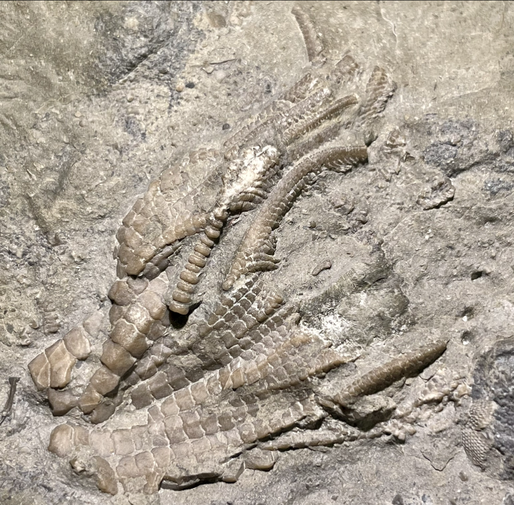
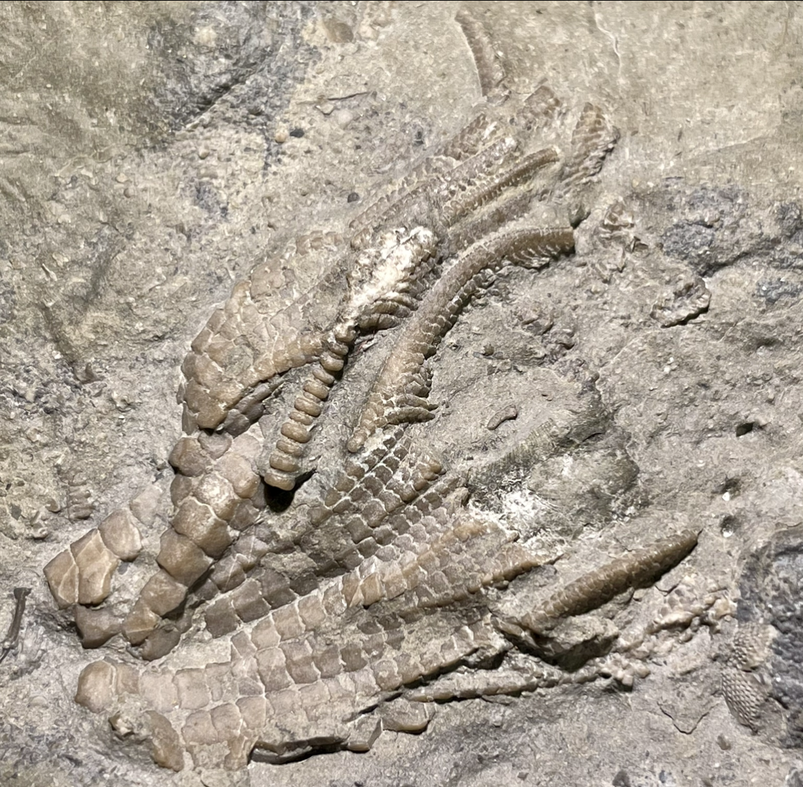

1. Reteocrinus alveolatus
2. Cleiocrinus regius
3. Grenprisia billingsi
4. Grenprisia springeri
• Ordovician
• Bobcaygeon Formation
• Ontario, Canada
Size: 7 cm crown for the Reteocrinus
1. A beautiful specimen of the ordovician camerate crinoid known as Reteocrinus alveolatus. This genus has to be one of my favorites, as its cup plates have extremely pronounced ridges and deep clefts in between that cause them to appear as interconnected X- and Y-shapes, which form a web-like pattern on the calyx. On the left of the calyx you can see the posterior side and anal series comprised of a single vertical column of plates. Small, irregular plates fill the spaces between the proximal arms, and this specimen also shows the densely-branched arms to their very tips as if waving gracefully in the water. Also characteristic of this species is the pentalobate/pentastellate stem, which gives it a roughly star-shaped cross-section.
Another interesting feature of this piece outside of the Reteocrinus itself is the large section of stem that crosses behind it, which shows a very primitive arrangement. Most paleozoic crinoids had a relatively small lumen and a stem made of discrete stacked "disks". In contrast, very early ordovician crinoids had a large lumen and thin-walled, pentameric columnals, meaning each "disk" was actually formed of five separate delicate, crescent-shaped pieces. The consequence of this is seen in this stem, which is being flattened under the Reteocrinus due to its thin walls and large lumen, and the individual units of each columnal dissociating as if splitting the stem lengthwise.
2. This is a fascinatingly unusual Ordovician camerate crinoid known as Cleiocrinus regius. Dr. Forest Gahn of BYU-I has worked on this genus and its bizarre and unique characteristics; notable among them is the extreme porosity and fragility of the calyx. Its numerous polygonal plates consistently maintain distinct sutural pores throughout ontogeny that may have served a respiratory function. Though calyx sutural pores are found in a few other Ordovician crinoids (mainly cladids, off the top of my head), their construction and prevalence in Cleiocrinus are entirely unique. Essentially, it appears that as the arms and pinnules become incorporated and "fixed" into the calyx, part of the spaces between them are maintained as pores instead of being completely fused together. On this particular specimen, you can observe the preserved free arms and pinnules transitioning into fixed plates of the calyx, though I unfortunately lack the equipment to show the actual sutural pores with sufficient resolution.
 
